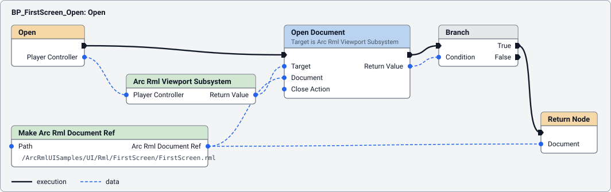
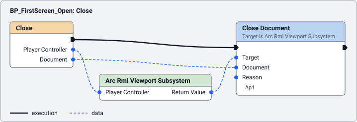
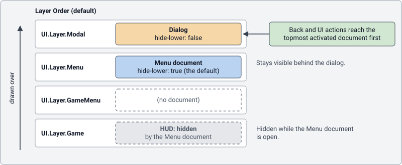

Documents¶
A document is an RML file (.rml) that describes one screen. Its <head> says where and how the
screen opens: the layer it is drawn on, and whether the game, the document or both get input. Its
<body> is what the player sees. This page lists everything the head can declare apart from view models
(View models). It then shows how to open and close documents and explains layers.
The head¶
The head of the GamepadMenu sample declares a layer, an input mode and an input mapping, links two style sheets and
declares one view model. The excerpt ends at </head>; the <body> follows it in the file:
<rml>
<head>
<title>Gamepad menu</title>
<meta name="layer" content="UI.Layer.Menu"/>
<meta name="input-mode" content="menu"/>
<meta name="input-mapping" content="/ArcRmlUISamples/UI/Rml/GamepadMenu/IMC_Sample_GamepadMenu"/>
<link type="text/rcss" href="/ArcRmlUISamples/UI/Rml/Shared/Samples.rcss"/>
<link type="text/rcss" href="GamepadMenu.rcss"/>
<viewmodel name="menu" class="/Script/ArcRmlUISamples.ArcRmlSamplesGamepadMenuViewModel" create="true"/>
</head>
Every <meta name="..." content="..."/> is optional, and each name is allowed once. An unknown name or a value not
listed below is a head error: the document does not open (OpenDocument returns false) and the log names the line.
| Meta | Values | Default | Effect |
|---|---|---|---|
layer |
A UI.Layer.* gameplay tag that is in the Layer Order setting (Project Settings > Game > ArcRmlUI > Layers) |
UI.Layer.Game |
The layer the document opens on. |
input-mode |
game, menu, all |
game |
game leaves keys and mouse to the game, menu gives them to the document, all gives them to both (Concepts). |
hide-lower |
true, false |
true |
While the document is open, open documents on lower layers are hidden. |
keep-alive |
true, false |
false |
Closing parks the document instead of destroying it; opening it again keeps its scroll position, field text and other state (Keep-alive and preload). |
input-mapping |
The package path of an Input Mapping Context | none | The context's actions are bound as UI actions while the document is active, and their keys are readable as ArcKeys.<Action> (View models). Not allowed with input-mode game. |
input-mapping-priority |
An integer | The Default Input Mapping Priority setting, 1 (Project Settings > Game > ArcRmlUI > Input) | Priority of that context. Needs input-mapping. |
any-input |
true, false |
false |
Every key and pad press also sends an anyinput event to the document. true is not allowed with input-mode game. |
frame |
The package path of another document | none | Makes this document a tab of that frame document. A document with frame takes no other meta than input-mapping and input-mapping-priority. |
Open and close¶
Documents open per local player (more than one) through the UArcRmlViewportSubsystem local player subsystem. OpenDocument takes an
FArcRmlDocumentRef, the document's package path, and returns whether it opened; CloseDocument with the same
reference closes it.
const FArcRmlDocumentRef Document{TEXT("/ArcRmlUISamples/UI/Rml/FirstScreen/FirstScreen.rml")};
return Viewport->OpenDocument(Document) ? Document : FArcRmlDocumentRef();
This is an excerpt: Viewport is the local player's UArcRmlViewportSubsystem. The Quick start has the whole function and the close call.
BP_FirstScreen_Open is a Blueprint Function Library. Its Open function (input PlayerController, output
Document) runs Make Arc Rml Document Ref with Path /ArcRmlUISamples/UI/Rml/FirstScreen/FirstScreen.rml,
Arc Rml Viewport Subsystem (in the palette: Get ArcRmlViewportSubsystem) with the PlayerController input, Open Document on the subsystem and returns the
document when Open Document returns true. Its Close function (inputs PlayerController, Document) runs
Arc Rml Viewport Subsystem and Close Document.


How a call behaves:
OpenDocumentreturns false for an empty path, an unreadable head and while the player's world is being cleaned up. It returns true for a document that is already open.- An open or close requested while another one runs, for example from an
Initfunction or anon-closecall, is queued and runs after it, in request order. A queued open returns true. - The optional
CloseActionis an Input Action whose keys also close the document in amenuoralldocument. - In C++
OpenDocument(Document, Init, CloseAction)takes anInitfunction that runs on each open, after the document's view models exist and before it is shown, soGetViewModelalready returns them. - In Blueprint the async action
OpenDocumentForPlayerhas the same moment as itsBeforeActivatepin, andAfterActivatefires once the open has succeeded. CloseDocumenttakes anEArcRmlCloseReason, defaultApi.PreloadDocument(Document)(also a Blueprint node) andDiscardDocument(Document)(C++ only) load a document before its first open and destroy its parked view: Keep-alive and preload.
A document also opens and closes without game code:
data-action="close"on an element closes the document, anddata-action="open:<package path>"opens another one.- In a
menuoralldocument the CommonUI Back action closes it when nothing in the document handles Back first (Events). ArcRml.Open <Path>andArcRml.Close <Path>in the console, for exampleArcRml.Open /ArcRmlUISamples/UI/Rml/FirstScreen/FirstScreen.rml.
Game code learns about documents from three events on the subsystem, assignable in Blueprint: OnDocumentActivated and
OnDocumentDeactivated (they follow the CommonUI activation of the document, so opening a document on top deactivates
the one below) and OnDocumentClosed with the document and its close reason:
Api:CloseDocumentorArcRml.Close.Back: the Back action.CloseKey: a key of theCloseAction.DocumentAction:data-action="close".Discard:DiscardDocumentdestroyed the document while it was closing.Reload: the editor reloaded the document after a file changed.WorldCleanup: the player's world was cleaned up.
Layers¶
A layer is a UI.Layer.* gameplay tag. The Layer Order setting lists the layers from bottom to top, one layer per
tag, and the default order is UI.Layer.Game, UI.Layer.GameMenu, UI.Layer.Menu, UI.Layer.Modal. A document on
a higher layer is drawn over one on a lower layer, and Back and UI actions reach the topmost layer's activated document
first. A dialog is a document on UI.Layer.Modal; there is no separate dialog flag.
hide-lower hides lower layers while a document is open: a UI.Layer.Menu document with the default hides a
UI.Layer.Game HUD, and a dialog that should leave the menu visible behind it sets hide-lower to false.

Two functions of the subsystem, both Blueprint callable, read the stack: GetLayerDocuments(Layer) returns the open
documents of a layer from bottom to top, and GetTopDocument(Layer) returns the last of them (empty when the layer has
none). In C++, IsDocumentOpen(Document) tells whether one document is open; a document that is playing its leave
transition counts as not open.
Next¶
- View models: where a document's data comes from.
- Events: how a document calls back into game code.
- Designing a game's UI: layers, screen owners and shared parts for a whole game.